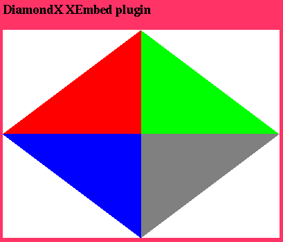

DiamondX XEmbed Example Plugin
|
|
Updated: April 16, 2007
Introduction
DiamondX is a simple NPAPI plugin built to run on Unix platforms and exercise the
XEmbed browser extension. If your browser can run the DiamondX browser plugin then
it ought to be able to run the upgraded, XEmbed-supporting future version of
Adobe Flash Player for Unix (on
particular platforms and CPU architectures).
Requirements
- a working build environment (gcc, autotools)
- X11 headers and libraries
- GTK 2.0 headers and libraries
- Netscape Portable Runtime (nspr)
Installation
Unpack:
tar jxvf diamondx-0.1.tar.bz2
cd diamondx-0.1
Configure and build:
./configure
make
At this point, the customary step is to perform 'make install'. However, that
will not do anything useful for this plugin. Execute:
make install-plugin
This will install the plugin into ~/.mozilla/plugins which is one of the
standard destinations for browser plugins in a Unix environment.
Testing
In Mozilla/Firefox browsers, check the "about:plugins" page. The DiamondX plugin
should be registered.
The same applies for other NPAPI-compatible Unix browsers, using whatever
facilities that register the existence of plugins. If the plugin fails to register,
if may be necessary to ask the browser to re-register the plugins. If this still
doesn't work, run the 'ld' command against the plugin binary to make sure there are
no missing symbols:
$ ld ~/.mozilla/plugins/libdiamondx.so
ld: warning: cannot find entry symbol _start; not setting start address
The warning about the missing _start symbol is normal. Any other warnings may
indicate a problem.
To test the actual plugin functionality, load the file "test/index.htm" from the
main source distribution directory. This should show a page with a 400x300 DiamondX
plugin against a non-white background:

In order to best test the plugin, run the browser from the command line. The
DiamondX plugin prints a lot of information to the standard output, particularly
concerning which events it is receiving. These are items to verify:
- Moving the mouse over the plugin should result in mouse motion events.
- Moving the mouse into and out of the plugin should result in enter and
leave events, respectively.
- Clicking the left mouse button should trigger a lot of stuff:
- A button 1 press event.
- A notice about which quadrant of the plugin was clicked.
- A button 1 release event.
- If the mouse is clicked in the first or second quadrants, the plugin
should present either a modal info dialog or a modal file selection dialog,
respectively.
Test that the hosting browser honors the modality of these dialogs.
- A right mouse click inside the browser should launch a context menu.
- If present, the mouse scroll wheel should report scrolling events.
- Focus: focus should not follow the mouse. This is a major
selling point of XEmbed. Fine-grained tests:
- Clicking inside the plugin when the plugin does not have focus should send a
"focus in"
event.
- Clicking outside the plugin when the plugin has focus should send a
"focus out" event.
- While the plugin has focus, pressing and releasing keys on the keyboard
should send key press/release events.
- When the plugin has focus, move the mouse outside of the plugin. The
plugin should still receive key events.
- When the plugin does not have focus, move the mouse inside the plugin.
The plugin should not receive key events.
Future Development
NPAPI plugins on Unix do not have a well-defined method for supporting windowless
plugins (a.k.a. wmode) that are popular in the world of Flash (and not just for
advertisements). This plugin will hopefully serve as a testbench for wmode support
in various browsers. There is already some code in place for supporting wmode but
it needs more browser buy-in. The reason that the plugin is plotted against a
non-white background is that it should eventually be a transparent windowless
plugin where the background takes over the white portions of the plugin. That's the
goal.
Contact
For feedback regarding this plugin, and only this plugin, send email to diamondx at
multimedia.cx.